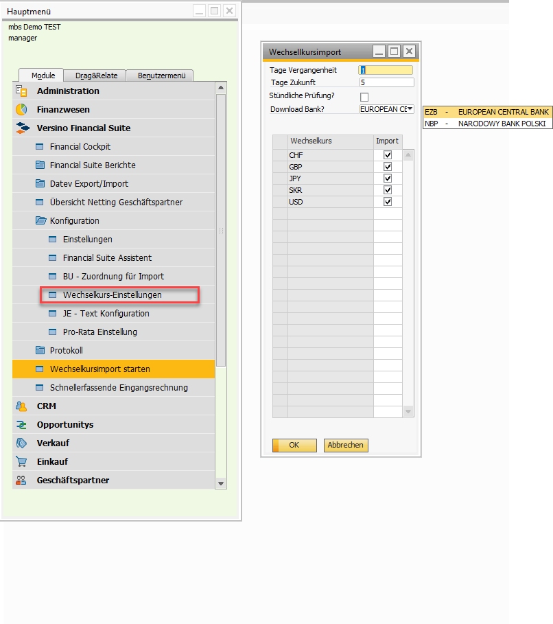

Exchange Rates Import
Overview
The Versino Exchange Rates Module enables the automatic import of current exchange rates from official central banks directly into SAP Business One. This ensures that current and official rates are always available for all foreign-currency transactions. At the first start, a configuration is automatically created which you can then adapt.
Module Access: The configuration for the import is found under Versino Financial Suite > Configuration > Exchange Rate Settings. The manual import can be started at any time via Versino Financial Suite > Import Exchange Rates.
Main Features
Automatic Exchange Rate Import
The module retrieves official data from central banks and writes it into the exchange rate table of SAP Business One. It respects the quotation type (direct/indirect) stored in SAP B1 and overwrites existing values to keep the data up to date. The calculation runs automatically via international currency codes (ISO).
Supported Data Sources (ECB & NBP)
You can choose between two official data sources:
- European Central Bank (ECB): Provides reference rates for all common currencies based on the Euro (EUR). Historical data is fully available.
Data source:http://www.ecb.europa.eu/stats/eurofxref/eurofxref-hist.xml - National Bank of Poland (NBP): Provides rates based on the Polish Złoty (PLN) from NBP table A. The retrieval of historical data here is limited to a maximum of 93 days back.
Data source:https://api.nbp.pl/api/exchangerates/tables/a/
Note the NBP Limit
The National Bank of Poland only provides historical rates for a maximum of 93 days back. Configure the value "Days Past" accordingly, otherwise the import will fail with an error message.
Hourly Background Update
Via the option "Hourly Check" the module works fully automatically in the background: every hour new rates are retrieved and updated in SAP B1 — without manual intervention.
Flexible Configuration & Currency Selection
In the settings you can specify exactly which currencies are relevant for the import. This improves performance, since only the necessary rates are retrieved.
Period Management and Gap Filling
The system handles periods intelligently — perfect for companies with daily foreign-currency transactions:
Weekend Handling
On weekends, central banks do not publish rates. The system automatically detects Saturday and Sunday and extends the period by the corresponding working days, so that always sufficient data is available.
Gap Filling
Missing days (e.g. holidays) are automatically filled with the last available rate. This ensures that for every business day a valid rate exists — even for postings with a value date on the weekend.
Future Rates
If you configure a positive value for "Days Future", the system also fills future date values with the most current available rates — useful for forward postings.
Integration with SAP Business One
SAP B1 Exchange Rate Management
Direct integration into the standard exchange rate tables of SAP Business One. The standard functions are used — no direct data manipulation, no backup issues.
Quotation Type & Local Currency
The module respects the quotation type (direct/indirect) stored in SAP B1 and automatically detects the local currency of the database. With a different local currency, the calculation is performed automatically.
VPS Pro-Rata & Reporting
Pro-Rata postings with foreign currencies use the imported rates. Reporting reports show all foreign-currency movements with current rates.
Application
Method 1: Import daily rates automatically (recommended)
- Navigate to Versino Financial Suite > Configuration > Exchange Rate Settings.
- Choose the matching data source (e.g. "ECB" for EUR-based systems).
- Set "Days Past" to e.g. 10 to fill any gaps (NBP max. 93).
- In the lower area, select all currencies you need.
- Activate the checkbox "Hourly Check" for automatic background updates.
- Save the settings. The system now automatically retrieves the latest rates, hourly or after an add-on restart.

Method 2: Update Rates Manually
If you need the latest rates immediately, you can start the import manually:
- Click in the menu on Versino Financial Suite > Import Exchange Rates.
- Confirm the safety dialog with the message: "Are you sure you want to update the exchange rates with the official values? Existing values will be overwritten."
- The system loads the rates immediately from the configured central bank.
- A progress display informs about the processing status.
Tips and Troubleshooting
Tips for Daily Work
- Optimal data source: Choose ECB for EUR-based companies, NBP for PLN-based companies. The data source should match the local currency.
- Optimize performance: Configure only the currencies that you actually need for your business operations. This significantly speeds up the retrieval.
- Use automation: Activate the hourly check for time-critical applications. Manual imports should be done outside critical posting times.
- Prefer working days: Run manual imports preferably on working days — there are no new rates on weekends.
Common Problems and Solutions
Problem: Error message "Server request error".
Solution: Check your internet connection and any firewall settings that might block access to the central banks' servers (e.g. ecb.europa.eu, api.nbp.pl).
Problem: NBP-specific error message "Import period too large (max. 93 days)".
Solution: The National Bank of Poland (NBP) limits the retrieval of historical data. Reduce the value in the field "Days Past" in the settings to 93 or less.
Problem: No rates are imported for weekends (ECB).
Solution: This is the correct behavior. The ECB does not publish reference rates on weekends and holidays. The module automatically fills these gaps with the last valid rate from the previous working day.
Problem: The import fails with a permission message.
Solution: Make sure the executing SAP Business One user has the permission to manage exchange rates and indices (under Administration > System Initialization > Authorizations > General Authorizations). Administrator rights are often required.
Problem: Hourly update does not work.
Solution: Check whether the option "Hourly Check" is activated in the configuration. The system stops automatically when the option is deactivated.
Problem: Configuration cannot be loaded.
Solution: At first start a default configuration is automatically created. Check the error messages for details and ensure that the database permissions are set correctly.